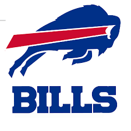

Boston
Buffalo Bills
Sea Green
-
The Buffalo Bills are a professional American football team based in the Buffalo metropolitan area.
-
The Bills compete in the National Football League (NFL) as a member club of the league's American Football Conference (AFC) East division.
-
The Bills name is derived from an All-America Football Conference (AAFC) franchise from Buffalo that was in turn named after western frontiersman Buffalo Bill.
-
The Bills began competitive play in 1960 as a charter member of the American Football League led by head coach Buster Ramsey and joined the NFL as part of the AFL-NFL merger in 1970.

Index